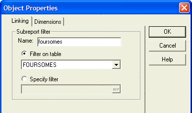
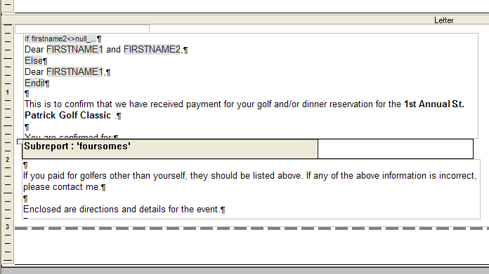
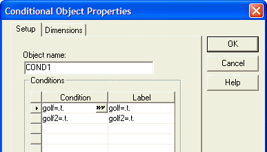
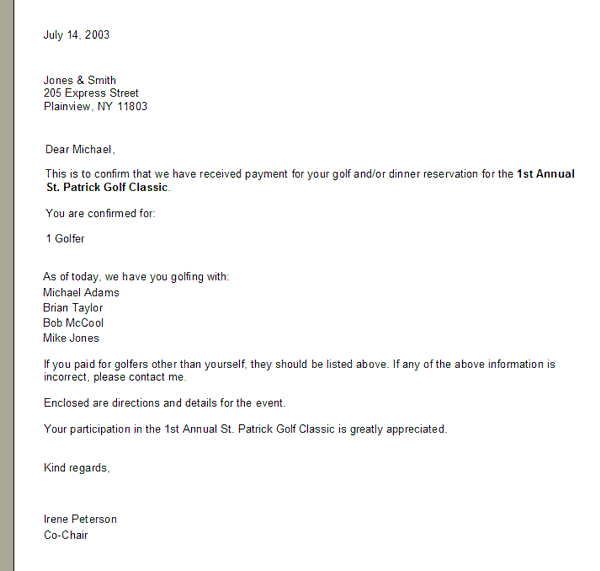

Putting a Conditional Sub-report on a Letter
The following example shows how to put a sub-report, which containing variable content, on a letter only when specific conditions are met.
The first step is to define the sub-report, which in this case is named "foursomes". This sub-report displays the data from the table FOURSOMES, which is sorted by the foursome field. The result is the firstname and lastname fields from the records that have the same foursome value.

The letter design has two RTF objects above and below the sub-report, which is placed on a conditional object.

The conditional object has two conditions, which must be true before the sub-report appears.

The result is a letter similar to the one below.
